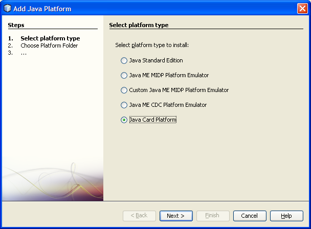
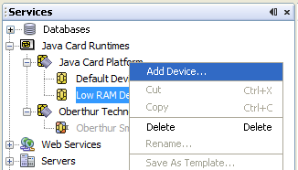
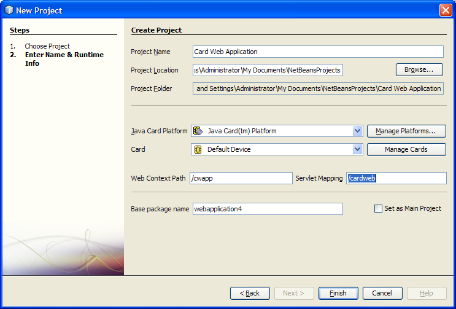
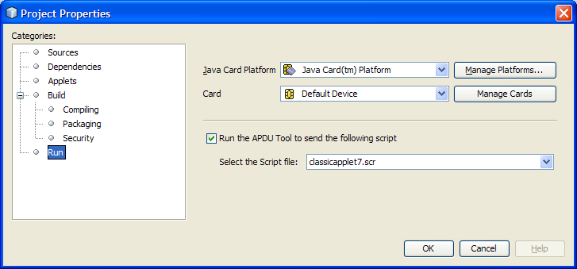

Apache NetBeans
Apache NetBeansLatest release
Краткое руководство пользователя по разработке приложений Java Card
| This tutorial needs a review. You can edit it in GitHub following these contribution guidelines. |

Составитель: Тим Бодро (Tim Boudreau), редактор: Рут Кастерер (Ruth Kusterer)
Java Card – интересная для работы платформа JVM, работающая на смарт-картах и небольших устройствах, помещающихся на ладони. Java Card 3.0 существует в двух вариантах:
- Классический
-
Такой же, как и более ранние версии Java Card. Платформа крайне ограничена. Например, отсутствует
java.lang.String, нет методаjava.lang.Object.hashCode(), и не поддерживаются числа с плавающей точкой. - Расширенный
-
Новые, более мощные смарт-карты - все это новые возможности Java Card 3.0. Поддерживается более полная реализация платформы Java. Наиболее любопытна встроенная поддержка сервлетов. Можно написать веб-приложение с помощью хорошо знакомого интерфейса API, которое будет выполняться на смарт-карте.
Требования
Для работы с этим учебным курсом требуются программное обеспечение и ресурсы, перечисленные ниже.

Figure 1. Содержимое этой страницы применимо к IDE NetBeans 6.8 и 6.9
| Программное обеспечение или материал | Требуемая версия |
|---|---|
6.9 |
|
3.02 |
|
Подключаемый модуль Java Card для среды NetBeans |
1.3 |
Версия 6 |
Настройка среды проекта
Поскольку у смарт-карты отсутствует пользовательский интерфейс, требуется либо иметь устройство чтения смарт-карт для чтения и записи карт, либо использовать эмулятор, включенный в Java Card Reference Implementation (RI). В этом учебном курсе будет использоваться эмулятор.
Примечание. Подключаемый модуль Java Card работает в любой операционной системе, но эмулятор Java Card Reference Implementation доступен только для Windows. Тем не менее, можно настроить его как платформу Java на других операционных системах, указав в среде NetBeans на RI, установленный в разделе Windows, в системах Mac или Linux, однако в таком случае не будет возможности запуска приложений.
Установка подключаемых модулей в IDE NetBeans
-
Загрузите и установите IDE NetBeans 6.9.
-
После установки в меню "Сервис" выберите пункт "Подключаемые модули".
-
Под заголовком Available Plugins находятся два подключаемых модуля, связанных с Java Card: Java Card и Java Card Runtime Bundle.
-
Java Card представляет собой подключаемый модуль, добавляющий поддержку проектов Java Card к IDE NetBeans.
-
Java Card 3.0.2 Runtime Bundle требуется только при отсутствии установленной копии Java Card Reference Implementation.
-

-
После установки подключаемого модуля требуется перезапустить среду IDE, а затем продолжить выполнение учебного курса.
Регистрация платформы Java Card
Если Java Card 3.0.2 Runtime Bundle был загружен с помощью диспетчера подключаемых модулей, то пакет Java Card SDK уже настроен в качестве платформы. Однако, если платформа была загружена с веб-сайта java.sun.com, можно использовать меню Tools > Java Platforms, чтобы добавить платформу Java Card в среду IDE так же, как добавляется любая платформа Java.

После настройки платформа Java Card появляется на вкладке "Службы" в среде IDE. Если вкладка "Службы" не отображается, выберите пункт "Службы" в меню "Окна".

На одной "платформе" может быть несколько "устройств". Проект развертывается на конкретном устройстве конкретной платформы.
Общие сведения о типах проектов Java Card
В меню "Файл" выберите пункт "Создать" и выберите категорию Java Card. Можно создавать несколько типов проектов Java Card. Все они собираются с помощью Apache Ant, так же, как проекты NetBeans Java SE.

Классический апплет — традиционный апплет Java Card для небольших устройств, как апплеты в Java Card 2.0 и ранее. Классическая библиотека подобна классическим проектам апплетов, но без апплета, просто код, который нужно поместить на устройство, который может разделяться между апплетами.
Расширенный апплет и библиотека — то же самое с расширенным API Java Card 3.0, т.е. с возможностью использования java.lang.String и прочего. Загрузочный путь к классам различается для классических и расширенных проектов, поэтому, например, автозавершение кода не будет предлагать java.lang.String в классических проектах, но будет в расширенных.

Проекты веб-приложений - это наиболее интересная и захватывающая функция Java Card 3.0. Пользователи получают проект схемы с реализованным сервлетом и доступ к полному API сервлета. С этими приложениями проще работать, чем с апплетами — на стороне клиента не требуется дополнительный код для взаимодействия с устройством, достаточно веб-браузера. Приложения можно тестировать локально с помощью Reference Implementation и веб-браузера.

[[Работа с проектом]]
В этом учебном курсе будет создан веб-проект.
В новом веб-проекте введите имя проекта "Веб-приложение Card" и укажите путь к проектам NetBeans. Нажмите кнопку "Готово". Проект отображается на вкладке "Проект".
Щелкните правой кнопкой мыши узел проекта на вкладке "Проект" и выберите в контекстном меню пункт "Свойства". В разделе "Выполнить" окна "Свойства проекта" можно изменить платформу и устройство для развертывания проекта. Нажмите кнопку "Закрыть" для сохранения изменений.
Работа с веб-приложением Java Card похожа на работу с любым веб-приложением, развертываемом в контейнере сервлетов. Нажмите кнопку "Выполнить" на панели инструментов для запуска примера "Hello World". При запуске веб-приложения Java Card открывается веб-браузер с выходным сообщением сервлета: Hello from webapplication1.MyServlet .

При запуске проектов с типом апплетов в IDE NetBeans можно использовать два удобных интерфейса: вывод данных в командной строке и консоль Java Card. Консоль используется для взаимодействия с апплетом. Можно отправлять данные в шестнадцатеричном формате и получать ответные сообщения.
Совет. RI содержит дополнительные образцы проектов, которые готовы к открытию и запуску в IDE NetBeans.

[[Использование особых возможностей подключаемых модулей]]
Java Card включает два "магических" понятия, отсутствующих в других платформах Java:
- Идентификаторы приложений (AID)
-
Эти уникальные идентификаторы выглядят следующим образом: //aid//720A75E082/0058AEFC20. Первая часть шестнадцатеричного кода — идентификатор поставщика (его можно получить в International Standards Organization (ISO)); вторая часть — уникальное значение, выбранное разработчиком. Идентификаторы AID используются для идентификации классов апплетов, пакетов Java (только для классических апплетов и библиотек), уникальных экземпляров апплетов (можно развертывать один апплет многократно на одном устройстве — идентификатор AID экземпляров будет использоваться для выбора апплета).
- Сценарии APDU
-
Это сценарии отправки данных апплету. Они содержат большое количество набранного вручную шестнадцатеричного кода; сценарий должен выбрать конкретный экземпляр апплета и отправить ему данные. Вместо написания сценария можно использовать консоль Java Card.
Хотя эти два момента довольно сложны, подключаемые модули NetBeans помогают абстрагироваться от этих сложностей следующим образом:
-
При создании проекта автоматически создаются корректные значения AID апплета, AID классического пакета и один AID экземпляра.
-
При переходе на вкладку 'Апплеты' диалогового окна 'Свойства проекта', проект сканирует его путь к классам для всех найденных подклассов апплета карт Java Card:

-
После их обнаружения можно выбрать в диалоговом окне апплеты, которые действительно развертываются, и настроить значения AID, параметры развертывания и так далее. Введенные значения проверяются средой IDE, поэтому ввести некорректные данные сложно.

-
Если требуется развертывать два экземпляра одного апплета, можно настроить и такое поведение. Однако в простых случаях, когда нужно развертывать только один экземпляр, нет необходимости задумываться об этом.

-
Для тестирования апплетов не нужно писать вручную сценарии APDU — можно использовать консоль для прямого взаимодействия с апплетами.


-
"AID пакета" для классических проектов (в которых может быть только один пакет Java) также обрабатывается средой IDE, но есть возможность настройки.

-
Часть всех значений AID в проектах — присвоенный организацией ISO ID поставщика (RID). Для ускорения начала работы среда IDE генерирует случайное значение RID, пригодное для разработки и тестирования. При наличии официального RID, можно ввести его в меню "Сервис > Параметры", и оно будет использоваться для всех новых проектов. Нажмите кнопку "Создать" в окне "Свойства проекта" для обновления значений в существующих проектах.

[[Взаимодействие с пакетами SDK сторонних поставщиков]]
В настоящее время средствами поддерживается только Java Card 3.0.2 Reference Implementation, но они имеют расширяемый API для интеграции карт поставщиков. Определения платформы и устройства — простые файлы свойств, импортируемые сценарием сборки.
Развертывание осуществляется с помощью задач Ant, предоставляемых поставщиком смарт-карт. Это означает, что созданные проекты могут выполняться вне среды IDE и жесткая привязка к среде отсутствует. Исходный код задач Ant, являющихся частью Java Card RI, можно загрузить на портале проекта Java Card вместе с примерами проектов NetBeans.
Вы поставщик смарт-карт и создали средства развертывания Java Card? Обратитесь к автору подключаемого модуля Тиму Бодро (Tim Boudreau) для получения сведений об интеграции смарт-карт. Интеграция может осуществляться на нескольких уровнях, в зависимости от потребностей в поддержке карты в среде IDE.
Дополнительные ссылки
-
Авторами этих модулей по большей части является Анки Нелатуру (Anki Nelaturu) и остальные члены команды Java Card.
-
Официальный портал Java Card Sun — новости, инструментарии разработчика, справочные ресурсы, спецификации, разделы часто задаваемых вопросов.
-
Портал проекта Java Card — исходный код, примеры проектов, форумы, документация.
-
Развертывание сервлетов на смарт-картах: переносные веб-серверы с Java Card 3.0